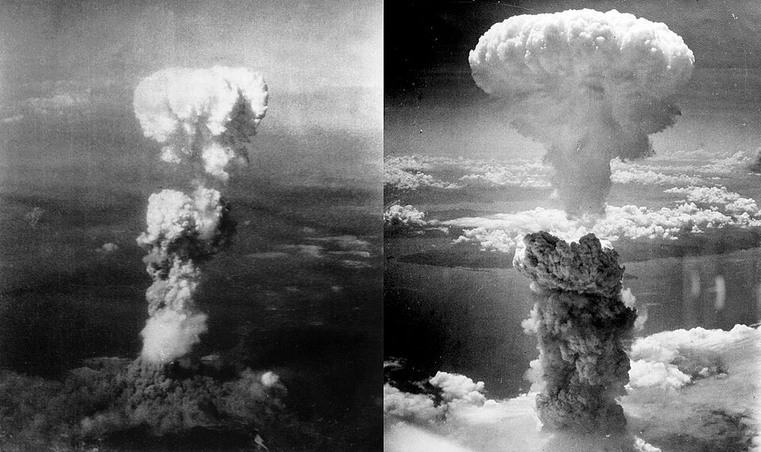

Una sola bomba arrasa Hiroshima
Estados Unidos anunció que arrojó sobre la ciudad japonesa una bomba atómica con la potencia de 20.000 toneladas de explosivo, que aprovecha la fuerza básica del universo. La era atómica comenzó con una ciudad borrada del mapa.

El presidente Truman reveló hoy al mundo que un bombardero norteamericano arrojó ayer (hora de Washington) sobre Hiroshima, base militar y puerto del Japón, una bomba de tipo enteramente nuevo: una bomba atómica, cuya potencia equivale a la carga de dos mil superfortalezas volantes. «Es el aprovechamiento de la fuerza básica del universo», declaró. «La fuerza de la que el sol extrae su poder ha sido lanzada contra quienes desataron la guerra en el Oriente».
Las primeras fotografías de reconocimiento describen lo indescriptible: una humareda en forma de hongo que trepó veinte mil metros, y debajo, donde había una ciudad de trescientas mil almas, una llanura calcinada. Radio Tokio habla de una calamidad sin precedentes y acusa al enemigo de crueldad inhumana; Washington responde que la alternativa era una invasión que costaría un millón de bajas, y advierte que si Japón no capitula, «lloverá desde el aire una ruina como jamás se vio sobre esta tierra».
Hoy se supo también el tamaño del secreto. Desde hace tres años, ciudades enteras que no figuran en mapa alguno —una en los montes de Tennessee, otra en un desierto de Nuevo México— emplearon a más de cien mil personas que no sabían qué fabricaban, con un gasto que el propio Truman cifró en dos mil millones de dólares: la mayor apuesta industrial de la historia, jugada a un número escrito en un pizarrón. El 16 de julio, en el desierto de Alamogordo, el artefacto se probó en el más estricto secreto; diez días después, desde Potsdam, los aliados exigieron a Japón la rendición bajo pena de «pronta y total destrucción». Tokio respondió con silencio. Hoy se sabe qué significaba la advertencia.
La bomba viajó en una superfortaleza bautizada Enola Gay, que es el nombre de la madre del piloto, el coronel Tibbets, y cayó a las ocho y cuarto de la mañana, la hora en que la ciudad iba al trabajo. Los tripulantes, hombres hechos a los bombardeos, no encuentran las palabras: el copiloto anotó en su cuaderno de vuelo una pregunta —«Dios mío, ¿qué hemos hecho?»— que la humanidad entera tendrá que responder con él. De la ciudad misma casi no llegan voces: las líneas están fundidas, y los primeros trenes que salieron de Hiroshima llevan heridos que los médicos de las ciudades vecinas no saben cómo curar, quemados por algo para lo que la medicina todavía no tiene nombre.
La bomba es el desenlace de una carrera científica librada en secreto absoluto, en la que trabajaron los mayores sabios de Occidente, muchos de ellos refugiados de la propia barbarie que combatían. La guerra, se descuenta, terminará en días o semanas. Lo que no terminará más es lo otro: el hombre posee desde ayer el instrumento de su propia aniquilación, y tendrá que aprender a vivir —si sabe— con semejante inquilino.